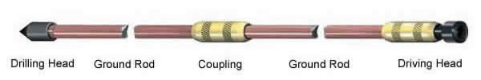

This Copper Clad Steel Ground Rod are made of high tensile low carbon steel and each rod is manufacturered by molecularly bonding 99.9% pure electrolytic copper to the low carbon steel core in acoordance with national and international standards such as UL467 and BS7430.
This Copper Clad Steel Ground Rod has good performance against natural corrosion and electrochemical reaction when rooted deeply in ground. Ground rods and grind wiring are welded by exothermicwelding powder so that the ground system are protected by the copper wholly and free of maintenance.
There are 3 types, please check the below:
1. Both ends screwed.
2. One end sharp and the other end screwed.
3. One end sharp and the other end flat.
This copper-clad steel ground rod is mainly used for combined ground rod, Here is the combined ground rod.

| Type | Diameter | Length | Copper Thickness | N.W. | Packing | |||
| Normal Dia. | Actual Dia. | inch | mm | mil | mm | kgs/pc | pc/bundle | |
KEN-CR001,Copper Clad Steel Ground Rod |
5/8 | 14.2 mm | 4 | 1200 | 10 | 0.254 | 1.53 | 20 |
KEN-CR002,Copper Clad Steel Ground Rod |
5/8 | 14.2 mm | 6 | 1800 | 10 | 0.254 | 1.88 | 20 |
KEN-CR003,Copper Clad Steel Ground Rod |
5/8 | 14.2 mm | 8 | 2500 | 10 | 0.254 | 3.10 | 10 |
KEN-CR004,Copper Clad Steel Ground Rod |
5/8 | 14.2 mm | 10 | 3000 | 10 | 0.254 | 3.72 | 10 |
KEN-CR005,Copper Clad Steel Ground Rod |
16 mm | 5 | 1500 | 10 | 0.254 | 2.37 | 10 | |
KEN-CR006,Copper Clad Steel Ground Rod |
16 mm | 8 | 2500 | 10 | 0.254 | 3.95 | 10 | |
KEN-CR007,Copper Clad Steel Ground Rod |
16 mm | 10 | 3000 | 10 | 0.254 | 4.74 | 10 | |
KEN-CR008,Copper Clad Steel Ground Rod |
3/4 | 17.2 mm | 5 | 1500 | 10 | 0.254 | 2.73 | 10 |
KEN-CR009,Copper Clad Steel Ground Rod |
3/4 | 17.2 mm | 8 | 2500 | 10 | 0.254 | 4.55 | 10 |
KEN-CR010,Copper Clad Steel Ground Rod |
3/4 | 17.2 mm | 10 | 3000 | 10 | 0.254 | 5.46 | 10 |
KEN-CR011,Copper Clad Steel Ground Rod |
18 mm | 8 | 2500 | 10 | 0.254 | 5.00 | 10 | |
KEN-CR012,Copper Clad Steel Ground Rod |
18 mm | 10 | 3000 | 10 | 0.254 | 6.00 | 10 | |
KEN-CR013,Copper Clad Steel Ground Rod |
20 mm | 5 | 1500 | 10 | 0.254 | 3.69 | 10 | |
KEN-CR014,Copper Clad Steel Ground Rod |
20 mm | 8 | 2500 | 10 | 0.254 | 6.15 | 10 | |
KEN-CR015,Copper Clad Steel Ground Rod |
20 mm | 10 | 3000 | 10 | 0.254 | 7.38 | 10 | |
KEN-CR016,Copper Clad Steel Ground Rod |
22 mm | 5 | 1500 | 10 | 0.254 | 4.47 | 8 | |
KEN-CR017,Copper Clad Steel Ground Rod |
25 mm | 5 | 1500 | 10 | 0.254 | 5.58 | 10 | |
KEN-CR018,Copper Clad Steel Ground Rod |
25 mm | 8 | 2500 | 10 | 0.254 | 9.63 | 5 | |
KEN-CR019,Copper Clad Steel Ground Rod |
25 mm | 10 | 3000 | 10 | 0.254 | 11.55 | 5 | |
1. Materials: Q235 2. Copper Thickness: ≥ 0.254mm 3. Tensile Strength: ≥ 500N/mm